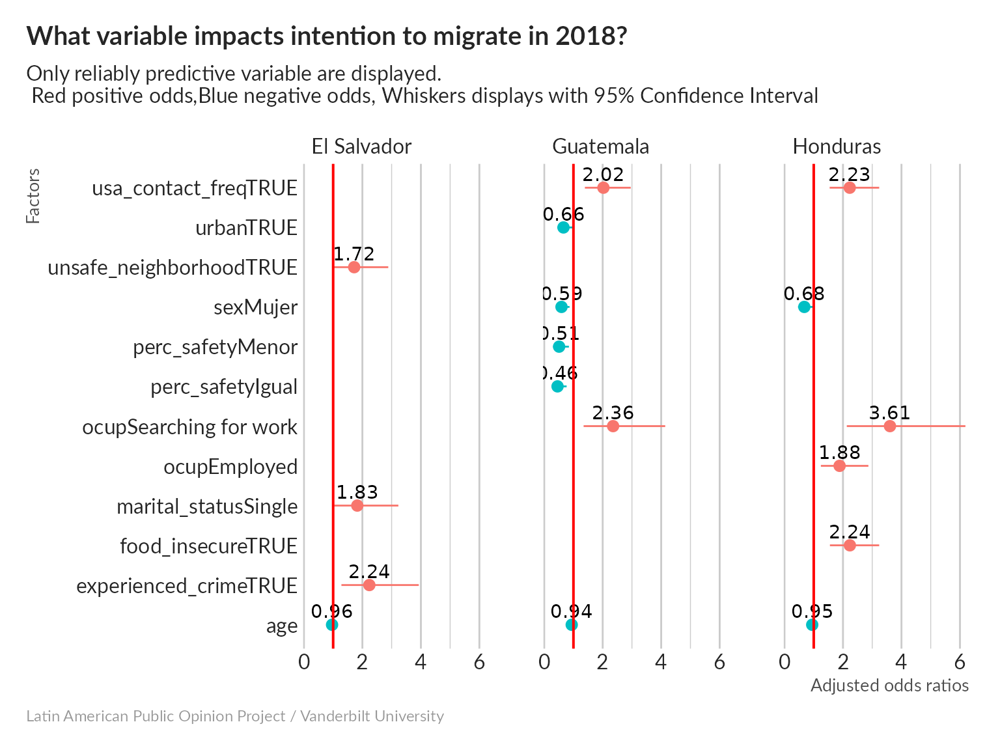

vignettes/Explaining_Intention_Migrate.Rmd
Explaining_Intention_Migrate.RmdPush factors are those associated with the area of origin, while Pull factors are those that are associated with the area of destination.
| Reasons | Pull factors | Push factors |
|---|---|---|
| Economic | More jobs, Better jobs, Higher wages, The promise of a “better life” | Overpopulation, Few jobs, Low wages |
| Social | Principles of religious tolerance | Intolerance towards a certain cultural group, Active religious persecution |
| Physical | Attractive environments, such as mountains, seasides and warm climates | Climate change, Natural disasters |
Public policy aiming at the limitation of Population movement shall be designed to in relation with the composition of the different types of push factors that generate them:
Intervention in relation with development and poverty alleviation will mostly address economic push factor
Intervention in relation with international protection will focus on social push factors
Intervention in relation with resilience and sustainability will address physical push factors
#> country urban age
#> "NODROP" "NODROP" "NODROP"
#> sex edu marital_status
#> "NODROP" "NODROP" "NODROP"
#> hhsize share_children ocup
#> "NODROP" "NODROP" "NODROP"
#> remittances_or_assistnace wealth_percentile usa_contact
#> "NODROP" "NODROP" "NODROP"
#> usa_contact_freq food_insecure social_media_user
#> "NODROP" "NODROP" "NODROP"
#> perc_safety perc_trust perc_natural_disaster
#> "NODROP" "NODROP" "NODROP"
#> perc_env_severity experienced_crime unsafe_neighborhood
#> "NODROP" "NODROP" "NODROP"
#> trust_judiciary trust_political_system trust_police
#> "NODROP" "NODROP" "NODROP"
#> recv_remittances rec_assistance intention
#> "NODROP" "NODROP" "NODROP"